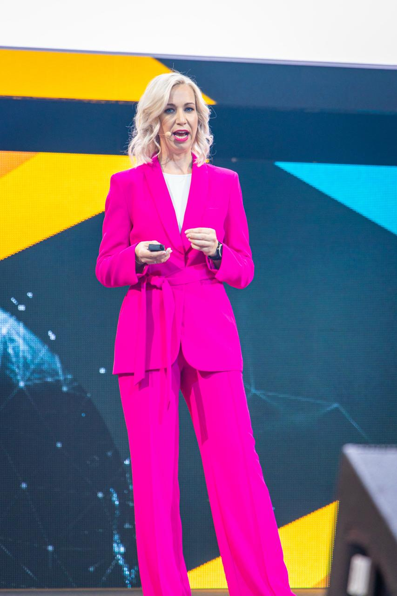

| Dienst | Account | Seit | Kosten | Status |
|---|---|---|---|---|
| Anthropic (Claude) | jenny.agents2go@gmail.com | 17.03.2026 | 108,00 € | Upgegradet |
| Anthropic (Claude) Upgrade | jenny.agents2go@gmail.com | 27.03.2026 | 200,00 € | Aktiv |
| ChatGPT | denise.stadtegger@gmx.at | 22.09.2025 | 23,00 € | Aktiv |
| ⚠️ Renderforest | jenny.agents2go@gmail.com | 25.03.2026 | 22,80 € | 🔴 Kündigen 23.04! |
| Hetzner Server | jenny.agents2go@gmail.com | 20.03.2026 | 7,79 € | Aktiv |
| Hetzner Backup | jenny.agents2go@gmail.com | 27.03.2026 | 2,51 € | Aktiv |
| Post | Impress. | Reach | Likes | Comm. | Shares | Reach% | Eng.% |
|---|---|---|---|---|---|---|---|
| Post 1 (23.03.) 🔍 | 1.665 | 1.078 | 38 | 2 | 0 | 211% | 3,6% |
| Post 2 (25.03.) 🔍 | 2.911 | 1.684 | 90 | 14 | 0 | 211% | 3,6% |
| Post 3 (27.03.) | Noch nicht gepostet | ||||||
Alles richtig! Content relevant.
Zielgruppe prüfen, Content anpassen.
Guter Content! Netzwerk ausbauen.
Strategiewechsel nötig!
| Datum | Post | Typ | Status |
|---|---|---|---|
| Mo 23.03. | Post 1: Comeback | Personal | ✅ Live |
| Mi 25.03. | Post 2: CMO-Nominierung | CMO | ✅ Live |
| Fr 27.03. | Post 3: Mein Weg als CMO 🎬 | CMO | ✅ Ready |
| Di 31.03. | Post 4: Was mich auf die Bühnen gebracht hat | Personal | ✅ Ready |
| Fr 03.04. | Post 5: KI × Marketing | Content | Entwurf |
| Di 07.04. | Post 6: Was ich in der Stille gelernt habe | Personal | Entwurf |
| Do 09.04. | Post 7: Nominierung Bedeutung ⭐ | CMO | Entwurf |
| Fr 10.04. | Post 8: Top 30 Reveal | CMO | Optional |
| Di 14.04. | Post 9: Kryptischer Hint | Teaser | Geplant |
| Fr 17.04. | Post 10: Cannes / Expertise | Mix | Geplant |


- Klare Premium-Beratung zwischen klassischer Marketingberatung und technischer AI-Beratung
- USP: Marketing-Strategin mit AI-Verständnis und glaubwürdiger CMO-Level-Perspektive
- 3-Ebenen-Service aus Audit und Roadmap, Strukturaufbau sowie Umsetzungs-Begleitung
Kernpunkte
- Kernpositionierung: "Ich unterstütze Unternehmen dabei, ihr Marketing so aufzustellen, dass es in einer AI-getriebenen Welt funktioniert – strategisch, strukturell und operativ."
- Positionierungs-Statement: Für Unternehmen, die ihr Marketing zukunftssicher aufstellen wollen, ist Denise die Marketing-Strategin, die versteht, wie Marketing in einer AI-getriebenen Welt funktioniert.
- Rolle im Markt: keine technische Implementiererin, sondern strategische und strukturelle Sparringspartnerin mit operativer Begleitung.
Statusbild
Kernpunkte
- USP: Marketing-Strategin mit AI-Verständnis, nicht AI-Beraterin mit etwas Marketing.
- Gegen AI-Berater: weniger technisch, dafür näher an Marke, Markt, Team, Führung und Marketingwirkung.
- Gegen klassische Marketing-Berater: zukunftsorientierter, weil AI-Auswirkungen auf Prozesse, Rollen und Entscheidungslogik mitgedacht werden.
- Proof: CMO-Level-Erfahrung, internationale Markenpraxis, European CMO of the Year Nominierung 2026.
Statusbild
Leistungsebenen
- 🎯 Strategisch: AI-Marketing-Audit, Strategieentwicklung und Roadmap, damit klar ist, was sich im Marketing wirklich ändern muss.
- 🏗️ Strukturell: Prozess-Design, Team-Setup und Tool-Bewertung, damit Strategie in belastbare Marketingstrukturen übersetzt wird.
- ⚙️ Operativ: Umsetzungs-Begleitung, Team-Training und Monitoring, damit Veränderungen im Alltag greifen und messbar werden.
- Wichtig: keine technische AI-Implementierung, kein Tool-Rollout als IT-Projekt, keine Agenturproduktion.
Kundennutzen
Das Modell adressiert die eigentliche Lücke im Markt: Unternehmen brauchen keine weitere AI-Show, sondern eine Marketing-Strategin, die Orientierung, Struktur und Umsetzungsfähigkeit zusammenbringt.
Pakete
- Strategisch: AI-Marketing-Audit mit Executive Readout, Strategie und priorisierter Roadmap. Ideal als Einstieg für Geschäftsführung oder Marketingleitung.
- Strukturell: Prozess-Design, Team-Setup und Tool-Bewertung als Aufbaupaket, wenn die Richtung klar ist und das Marketing neu ausgerichtet werden muss.
- Operativ: Umsetzungs-Begleitung, Trainings und Monitoring als Premium-Begleitung für Teams, die Veränderungen sauber verankern wollen.
- Retainer: laufendes Sparring auf CMO-Level zur Priorisierung, Review und Steuerung der Veränderung.
Preislogik
Verkauft wird nicht Zeit, sondern Entscheidungsqualität, Geschwindigkeit und Risikoreduktion. Genau das unterscheidet Denise von operativen Beratern und technischen AI-Anbietern.
Leitlinie: keine Stundensatz-Kommunikation nach außen, sondern Pakete nach Wirkung, Zugriff auf Führungsebene und Veränderungstiefe.
UVP und Differenzierung
- UVP: Denise unterstützt Unternehmen dabei, ihr Marketing für eine AI-getriebene Realität zukunftssicher aufzustellen, strategisch fundiert, strukturell sauber und operativ begleitet.
- Gegen AI-Berater: weniger Tech, mehr Marketingwirkung, Führungslogik und Business-Relevanz.
- Gegen klassische Marketing-Berater: moderner und zukunftsorientierter, weil AI-Einfluss auf Prozesse, Rollen und Entscheidungen konkret mitgedacht wird.
- Gegen Agenturen: vor der Umsetzung ansetzen, Richtung geben, Prioritäten definieren und Management entlasten.
- Adobe-inspirierte Brand-Logik: klare Zielgruppe, klares Problem, klare Rolle und wiedererkennbare Proof-Signale.
Zielgruppen-Fit
Am stärksten passt das Angebot für Unternehmen, die wissen, dass AI relevant ist, aber eine geschäftsnahe Marketing-Perspektive statt technischer Implementierungsberatung brauchen.
Nicht ideal: Kunden, die Software-Einführung, Prompt-Bibliotheken oder klassische Agentur-Execution einkaufen wollen.
Messaging
- Hauptbotschaft: Die meisten Unternehmen wissen, dass AI das Marketing verändert, aber nicht, wie sie ihr Marketing dafür richtig aufstellen sollen.
- Brand Promise: Aus Unsicherheit wird ein klarer Marketingkurs mit Struktur, Prioritäten und machbarer Umsetzung.
- Proof-Elemente: CMO-Nominierung, internationale Erfahrung, klare Sprache, strategische Tiefe ohne Technik-Blabla.
- Content-Säulen: Marketing in der AI-Welt, Führungsentscheidungen, Team- und Prozesslogik, klare Marktmeinungen.
- Tonality: selbstbewusst, verständlich, strategisch, praxisnah.
Umsetzung im Markt
Jeder Touchpoint soll die gleiche Differenzierung transportieren: Denise denkt wie eine Marketing-Verantwortliche auf CMO-Level und versteht gleichzeitig, was AI für Struktur, Prozesse und operative Realität bedeutet.
Leitlinie: erst Problem und Perspektive schärfen, dann das passende Service-Level anbieten.
Kernpunkte
- KMU, Mittelstand und wachstumsorientierte Unternehmen mit Marketingverantwortung bilden die primäre Nachfragebasis.
- Der Bedarf entsteht aus Transformationsdruck, Effizienzanforderungen und fehlender interner Strategiekompetenz für KI im Marketing.
- Das Timing ist günstig, weil 2026 viele Unternehmen vom Experimentieren in eine strategisch geplante KI-Adoption wechseln.
Statusbild
Marktdynamik 2020-2028
Die Kurve zeigt klar: Denise startet im Peak-Timing des KI-Marketing-Booms und nicht in einem reifen oder schrumpfenden Segment.
Kernpunkte
- Direkte Konkurrenz kommt vor allem aus KI-Marketing-Boutiquen, spezialisierten Freelancern und Transformationsberatungen.
- Indirekte Konkurrenz umfasst große Strategieberatungen, Digitalagenturen und klassische Marketingberater mit breiterem Leistungsportfolio.
- Substitutionskonkurrenz entsteht durch interne Teams, Tools, Weiterbildung und das verbreitete „Wir machen es später selbst“-Narrativ.
Statusbild
Top 10 Direkte Konkurrenz
- KI-Marketing-Boutiquen
- Freelance KI-Marketing-Berater
- KI-Transformations-Startups
- Strategieberatungen mit KI-Fokus
- Fractional-CMO-Angebote mit KI-Komponente
- Performance-Beratungen mit Automations-Stack
- Marketing-Operations-Berater
- Growth-Boutiquen mit KI-Sparring
- Innovation-Beratungen mit Marketingmodul
- Spezialisierte Executive Advisors
Top 10 Indirekte Konkurrenz
- Große Strategieberatungen
- Full-Service Digitalagenturen
- Klassische Marketingberatungen
- Branding-Agenturen
- CRM- und MarTech-Berater
- Unternehmensberater mit Vertriebsfokus
- Change-Management-Beratungen
- Workshops- und Trainingsanbieter
- Business-Coaches für Marketingteams
- Tech-/Daten-Beratungen ohne Marketingtiefe
Top 10 Substitutionen
- Interne Marketingleitung
- Interne KI-Arbeitsgruppen
- Einzelne Tools statt Beratung
- Weiterbildungen & Online-Kurse
- Freie Prompt-Playbooks
- Agentur-Pitches ohne Strategieprojekt
- Interne Projektgruppen
- Software-Vendor-Beratung
- Peer-Learning in Netzwerken
- „Do Nothing“-Szenario
| Cluster | Worüber sie verkaufen | Schwäche im Vergleich zu Denise | Argument für Denise |
|---|---|---|---|
| Boutiquen | Tempo, Spezialisierung, moderne Tools | oft weniger C-Level-Erfahrung und strategische Tiefe | Denise verbindet Business-Relevanz mit KI-Strategie und Executive Credibility. |
| Große Beratungen | Marke, Prozesse, Teamgröße | teurer, schwerfälliger, weniger persönlich | Direkter Zugang, höhere Umsetzungsnähe, leanes Premium-Modell. |
| Agenturen | Umsetzungskapazität, Kampagnen-Output | häufig operativ statt strategisch, KI selten auf Führungsebene | Denise startet vor der Umsetzung und gibt Richtung, Struktur und Priorisierung. |
| Substitutionen | Kostenersparnis, interne Kontrolle | langsamer Lernprozess, fehlende Außenperspektive | Externe Senior-Expertise beschleunigt Entscheidungen und vermeidet Umwege. |
SWOT-Analyse
Stärken
- CMO-Erfahrung in 50+ Ländern
- European CMO Award Nominierung
- Tiefe B2C- und Strategietiefe
- Klare KI-Strategie-Perspektive für Marketing
Schwächen
- Einzelunternehmen mit begrenzter Kapazität
- Neue Marke im Beratungsmarkt
- Abhängigkeit von Denise als Person
- Kein eigenes operatives Umsetzungsteam
Chancen
- KI-Boom und Transformationsdruck
- Marktlücke für C-Level-KI-Strategie
- Thought Leadership nutzbar
- DACH-weite Skalierung möglich
Risiken
- Große Beratungen erweitern KI-Angebote
- Agenturen professionalisieren sich
- Schnelle Technologieentwicklung
- Kürzere Budgetzyklen bei Unsicherheit
Die SWOT bestätigt eine starke Startposition mit klar kontrollierbaren Schwächen und sehr gutem Marktfenster.
Porter 5 Forces
Mittel bis hoch
Hoch
Hoch
Niedrig
Mittel
Die Five-Forces-Logik zeigt: Differenzierung und Vertrauensaufbau sind entscheidend, nicht nur Angebotstiefe.
BCG-Matrix der Angebotsfelder
Die Matrix legt den Fokus klar auf Strategieberatung und strategische KI-Begleitung als Star-Angebote.
Positionierung im Markt
Denise besetzt den seltenen Sweet Spot aus strategischem Anspruch und klarer KI-Strategie für Marketing.
Klassische Strategieberatung & Marketingberatung
Größtes Vergleichsfeld mit starkem Beratungsnarrativ, aber meist geringerer KI-Tiefe und weniger klarer persönlicher Positionierung.
- Verkaufen über Vertrauen, Erfahrung, Prozess
- Schwachstelle: wenig strategische KI-Kompetenz im Marketing
- Chance für Denise: modernes Executive-Angebot
Digitalagenturen & Growth-Spezialisten
Hohe Sichtbarkeit, umsetzungsstark, aber häufig kampagnen- und performancegetrieben statt wirklich strategisch.
- Verkaufen über Output und Teamgröße
- Schwachstelle: strategische Tiefe auf Geschäftsführungsebene
- Chance für Denise: vor der Umsetzung ansetzen
KI-/Tech-Beratungen
Technologisch stark, aber oft ohne echtes Marketingverständnis oder ohne Anschluss an CMO-/CEO-Logik.
- Verkaufen über Tools und Innovation
- Schwachstelle: Marketing wirkt als Anwendungsfall, nicht als Kern
- Chance für Denise: Business-Relevanz statt Tool-Show
Boutiquen, Freelancer & Substitutionen
Heterogenes Feld aus Einzelberatern, Nischenanbietern und internen Alternativen mit hoher Preissensibilität.
- Verkaufen über Nähe, Preis oder Flexibilität
- Schwachstelle: begrenzte Seniorität oder fehlende klare Methodik
- Chance für Denise: Premium-Positionierung und Fokus
Fazit für Denise
Der Markt ist attraktiv genug für einen fokussierten Start. Denise muss nicht die breiteste Anbieterin sein, sondern die klarste: strategische Marketingberatung mit strategischer KI-Begleitung für Unternehmen mit Veränderungsdruck.
- Starte mit wenigen, klaren Angeboten statt breiter Leistungsliste.
- Nutze die CMO-Nominierung und internationale Erfahrung als Vertrauensbeschleuniger.
- Positioniere dich bewusst zwischen Strategiehaus und KI-Boutique.
Business-Entscheidung
Empfohlen ist ein schneller Marktstart mit Premium-Logik, selektiver Kundenauswahl und klarer Vertriebserzählung. Kein Preiswettbewerb, keine operative Full-Service-Falle, keine Verwässerung durch zu viele Zielgruppen.
- Fokus auf Transformationskunden mit sichtbarem ROI-Bedarf.
- Vertriebsargument je Konkurrenzcluster ableiten und standardisieren.
- Retainer und Strategieformate priorisieren, Workshops als Einstieg nutzen.
Kernpunkte
- LinkedIn als primärer Kanal für Sichtbarkeit und Vertrauen
- Inhalte müssen Expertise, Haltung und Praxisnähe zeigen
- Website und Marketingmaterialien als nächster Enablement-Schritt
Statusbild
Kernpunkte
- Lead-Strecke vom Erstkontakt bis zum Angebot definieren
- Standardisiertes Angebotsformat festlegen
- KPIs für Conversion und Nachverfolgung ergänzen
Statusbild
Kernpunkte
- Software/KI ca. 200 €
- Steuerberatung ca. 150 €
- Website/Branding ca. 50 € bis 100 €
Statusbild
Kernpunkte
- Preismodell und Umsatzszenarien definieren
- Liquiditätsvorschau aus Vertriebslogik ableiten
- Rentabilität als Kernbaustein für Executive Summary ergänzen
Statusbild
Kernpunkte
- Erfolgshebel: klare Zielgruppe, starke Angebote, schneller Vertriebsprozess
- Risiken: verzögerter Vertriebsstart, unklare Preislogik, fehlende KPI-Steuerung
- Gegenmaßnahmen: standardisierte Angebote, Fokus auf wenige Segmente, laufendes Tracking
Statusbild
Kernpunkte
- Kein fixes Team zum Start
- Skalierung über selektive Partner oder Freelancer möglich
- Partnerprofil noch definieren, damit Wachstumslogik belastbar wird
Statusbild
Ziel der Website
- Denise als Marketing-Strategin mit AI-Verständnis auf CMO-Level sichtbar machen
- Vertrauen früh über Award, internationale Erfahrung und klare Sprache aufbauen
- Die drei Leistungsebenen strategisch, strukturell und operativ verständlich verkaufen
Was der Entwurf leisten soll
Die Seite soll nicht nach Agentur, Tool-Show oder Technikberatung wirken, sondern nach klarer Führung, Orientierung und strategischer Sicherheit.
Marketing, das in einer AI-getriebenen Welt funktioniert.
Ich unterstütze Unternehmen dabei, ihr Marketing strategisch, strukturell und operativ so aufzustellen, dass Entscheidungen klarer werden, Teams wirksamer arbeiten und AI nicht im Aktionismus endet.

Executive Marketing-Erfahrung mit klarem Blick auf die neue Realität.
CMO-Credibility
Nominierung für den European CMO of the Year 2026 als sichtbares Proof-Element für strategische Seniorität.
Internationale Perspektive
Marketingpraxis in internationalen Märkten und auf Führungsebene statt rein lokaler Agentur-Sicht.
Klare Übersetzung
AI nicht als Technikthema, sondern als Führungs-, Struktur- und Marketingfrage verständlich machen.
Drei Ebenen, ein Ziel: ein zukunftsfähiges Marketing-System.
Richtung festlegen
AI-Marketing-Audit, Executive Readout, Positionierung der Handlungsfelder und eine priorisierte Roadmap für Geschäftsführung und Marketingleitung.
- Standortbestimmung
- Entscheidungslogik
- Prioritäten & Roadmap
Marketing tragfähig aufbauen
Prozesse, Teamstruktur und Tool-Entscheidungen so gestalten, dass Marketing nicht an neuen Anforderungen zerfällt, sondern stabiler wird.
- Prozess-Design
- Rollen & Skills
- Tool-Bewertung
Veränderung sauber verankern
Sparring, Trainings und Umsetzungsbegleitung für Teams, die nicht nur wissen wollen, was zu tun ist, sondern es auch konsistent in den Alltag bringen müssen.
- Begleitung im Alltag
- Team-Enablement
- Monitoring & Nachschärfung
Die Lücke zwischen klassischer Marketingberatung und technischer AI-Beratung.
Wenn Marketing neu ausgerichtet werden muss, braucht es zuerst Klarheit.
Für wen es passt
KMUs, Geschäftsführer und Marketing-Leiter, die wissen, dass AI relevant ist, aber eine geschäftsnahe Marketing-Perspektive brauchen.
Worum es im Erstgespräch geht
Ausgangslage, Veränderungsdruck, wichtigste Blockaden und die Frage, auf welcher Ebene strategische Begleitung am meisten Hebel erzeugt.
Was bewusst fehlt
Keine Preisangaben, keine Toollisten, keine Leistungsüberfrachtung. Premium-Verkauf beginnt hier über Relevanz und Vertrauen.
Marketing braucht in der AI-Welt keine Hektik. Es braucht Führung.
Der Entwurf positioniert Denise als strategische Sparringspartnerin für Unternehmen, die ihr Marketing neu aufstellen müssen, ohne in Aktionismus, Tool-Einkauf oder Agentur-Overload zu kippen.
Chief Outsiders Große Beratung
Starker Enterprise-Claim, früher CTA, viele Proof-Elemente und eine sehr systematische AI-Erzählung. Wirkt hochprofessionell, aber wenig persönlich.
Marketri Fractional CMO
Saubere Mid-Market-B2B-Ansprache, zwei klare Angebotswege und starker Social Proof. Weniger pointierte Differenzierung auf eine Person.
StartupCMO Persönliche Brand
Sehr gute persönliche Führungsperspektive, klare Sprache und CTA-Dichte. Teilweise lang und startup-spezifisch, dadurch enger als Denise.
Authentic Transformation
Markante Markenidee, viel Methodik und starke Trust-Zahlen. Sehr wirksam, aber stark organisationszentriert statt persönlich pointiert.
CMOx Fractional Netzwerk
Conversion-stark mit Termin-CTA, KPI-Magneten und klarer Service-Logik. Visuell funktional, aber weniger premium und weniger beratungs-elegant.
Growth Generators Capability + AI
Sehr nah an Denise bei Teamstruktur, AI und Leadership. Gute Themenarchitektur, aber die persönliche Seniorität ist weniger aufgeladen.
Content Creative Strategy-first
Gute Strategie-vor-Execution-Erzählung und konsistente B2B-Sprache. Weniger exekutiver Anspruch, eher Content-/GTM-getrieben.
2b AHEAD Future AI KI-Beratung
Stark im Zukunfts- und Daten-Narrativ, sehr tool-/produktzentriert. Genau die Art von Tech-Lastigkeit, von der Denise sich bewusst abgrenzen sollte.
PwC AI Big Four
Große Sicherheit, viele Experten und Transformation auf Konzernebene. Professionell, aber unpersönlich und für KMUs oft zu breit und zu schwergewichtig.
SingleStone AI Consulting Tech-Beratung
Verkauft Klarheit, Risikoabbau und menschenzentrierte Technologie. Gute Problem-Solution-Struktur, aber klar technischer als Denise.
Was übernommen werden sollte
- Hero mit klarer Problemaussage plus sofortigem Gesprächs-CTA
- Frühe Trust-Zone mit Award, Erfahrung und internationaler Reichweite
- Services nicht als Liste, sondern als klarer Entscheidungsweg darstellen
- Mehrere CTAs entlang der Seite statt nur am Ende
- Klare Sprache ohne Marketing-Agentur-Floskeln
Was Denise bewusst anders machen sollte
- Persönliche Executive-Credibility stärker als Teamgröße oder Tool-Stack spielen
- AI als Kontext und Führungsfrage rahmen, nicht als Technikshow
- KMU-Ansprache auf Management-Ebene, nicht auf Marketing-Taktik-Ebene
- Weniger Methodik-Overload, mehr Orientierung und Entscheidungssicherheit
- Kein Pricing auf der Website, stattdessen Premium-Signale und Gesprächseinladung
Marketing, das in einer AI-getriebenen Welt funktioniert.
Ich unterstütze Unternehmen dabei, ihr Marketing strategisch, strukturell und operativ so aufzustellen, dass Entscheidungen klarer werden, Teams wirksamer arbeiten und AI nicht im Aktionismus endet.
Executive Marketing-Erfahrung mit klarem Blick auf die neue Realität.
CMO-Credibility
Nominierung für den European CMO of the Year 2026 als sichtbares Proof-Element für strategische Seniorität.
Internationale Perspektive
Marketingpraxis in internationalen Märkten und auf Führungsebene statt rein lokaler Agentur-Sicht.
Klare Übersetzung
AI nicht als Technikthema, sondern als Führungs-, Struktur- und Marketingfrage verständlich machen.
Drei Ebenen, ein Ziel: ein zukunftsfähiges Marketing-System.
Richtung festlegen
AI-Marketing-Audit, Executive Readout, Positionierung der Handlungsfelder und eine priorisierte Roadmap für Geschäftsführung und Marketingleitung.
- Standortbestimmung
- Entscheidungslogik
- Prioritäten & Roadmap
Marketing tragfähig aufbauen
Prozesse, Teamstruktur und Tool-Entscheidungen so gestalten, dass Marketing nicht an neuen Anforderungen zerfällt, sondern stabiler wird.
- Prozess-Design
- Rollen & Skills
- Tool-Bewertung
Veränderung sauber verankern
Sparring, Trainings und Umsetzungsbegleitung für Teams, die nicht nur wissen wollen, was zu tun ist, sondern es auch konsistent in den Alltag bringen müssen.
- Begleitung im Alltag
- Team-Enablement
- Monitoring & Nachschärfung
Die Lücke zwischen klassischer Marketingberatung und technischer AI-Beratung.
Wenn Marketing neu ausgerichtet werden muss, braucht es zuerst Klarheit.
Für wen es passt
KMUs, Geschäftsführer und Marketing-Leiter, die wissen, dass AI relevant ist, aber eine geschäftsnahe Marketing-Perspektive brauchen.
Worum es im Erstgespräch geht
Ausgangslage, Veränderungsdruck, wichtigste Blockaden und die Frage, auf welcher Ebene strategische Begleitung am meisten Hebel erzeugt.
Was bewusst fehlt
Keine Preisangaben, keine Toollisten, keine Leistungsüberfrachtung. Premium-Verkauf beginnt hier über Relevanz und Vertrauen.
Marketing braucht in der AI-Welt keine Hektik. Es braucht Führung.
Der Entwurf positioniert Denise als strategische Sparringspartnerin für Unternehmen, die ihr Marketing neu aufstellen müssen, ohne in Aktionismus, Tool-Einkauf oder Agentur-Overload zu kippen.